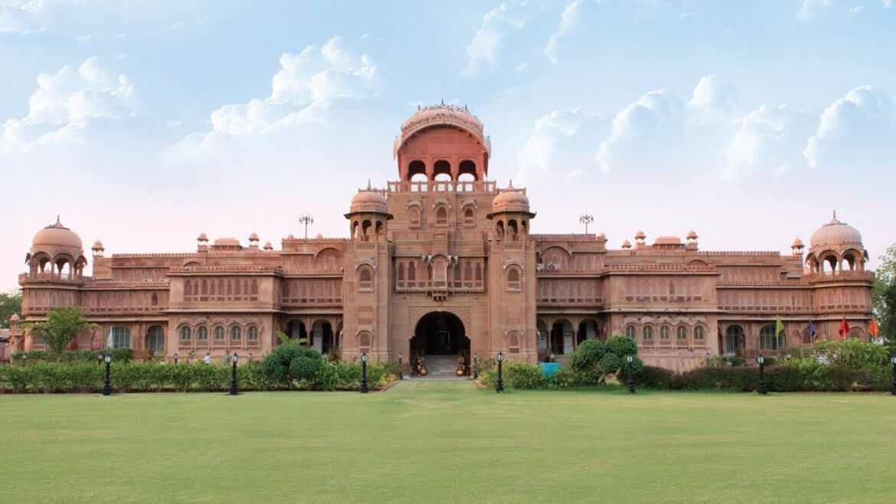
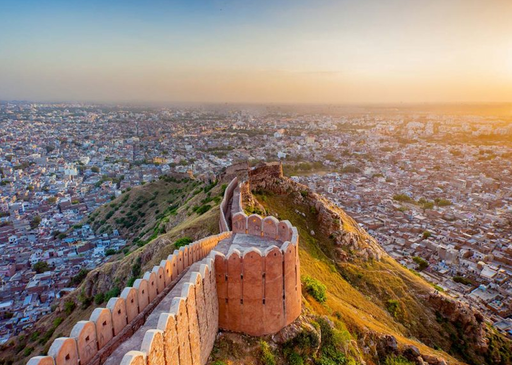
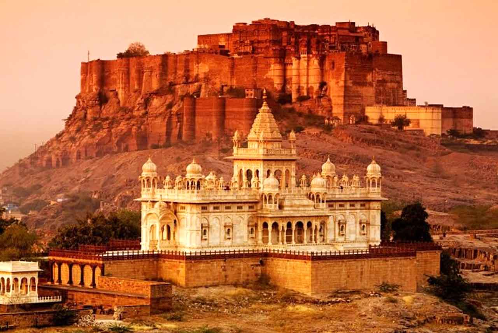
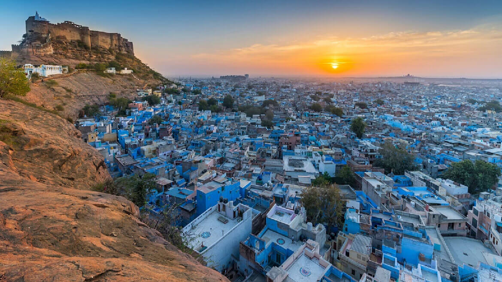
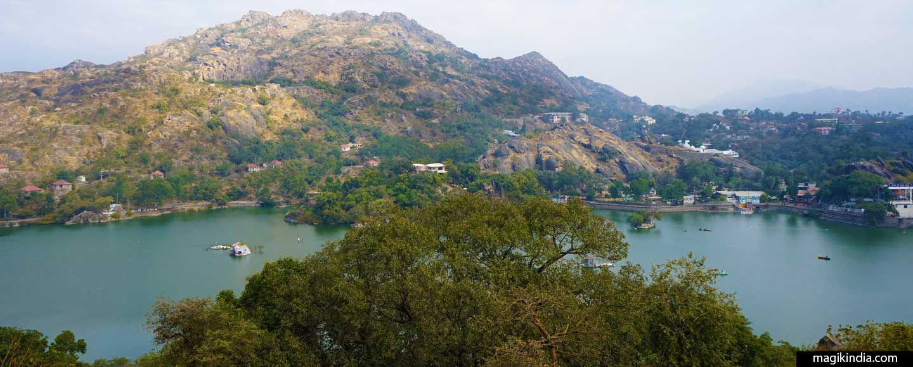
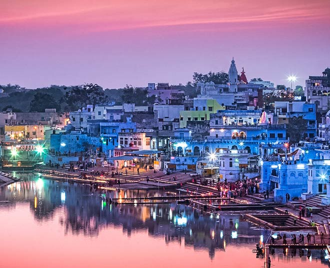

BIKANER
Bikaner is a city in the north Indian state of Rajasthan, east of the border with Pakistan. It's surrounded by the Thar Desert. The city is known for the 16th-century Junagarh Fort, a huge complex of ornate buildings and halls. Within the fort, the Prachina Museum displays traditional textiles and royal portraits. Nearby, the Karni Mata Temple is home to many rats considered sacred by Hindu devotees.
BUNDI

Bundi is a city in the Hadoti region of Rajasthan state in northwest India and capital of the former princely state of rajputana agency. District of Bundi is named after the former princely state.
JAIPUR
Jaipur is the capital of India’s Rajasthan state. It evokes the royal family that once ruled the region and that, in 1727, founded what is now called the Old City, or “Pink City” for its trademark building color. At the center of its stately street grid (notable in India) stands the opulent, colonnaded City Palace complex. With gardens, courtyards and museums, part of it is still a royal residence.
JAISALMER
Jaisalmer is a former medieval trading center and a princely state in the western Indian state of Rajasthan, in the heart of the Thar Desert. Known as the "Golden City," it's distinguished by its yellow sandstone architecture. Dominating the skyline is Jaisalmer Fort, a sprawling hilltop citadel buttressed by 99 bastions. Behind its massive walls stand the ornate Maharaja's Palace and intricately carved Jain temples.
JODHPUR
Jodhpur is a city in the Thar Desert of the northwest Indian state of Rajasthan. Its 15th-century Mehrangarh Fort is a former palace that’s now a museum, displaying weapons, paintings and elaborate royal palanquins (sedan chairs). Set on on a rocky outcrop, the fort overlooks the walled city, where many buildings are painted the city’s iconic shade of blue.
MOUNT ABU
Jodhpur is a city in the Thar Desert of the northwest Indian state of Rajasthan. Its 15th-century Mehrangarh Fort is a former palace that’s now a museum, displaying weapons, paintings and elaborate royal palanquins (sedan chairs). Set on on a rocky outcrop, the fort overlooks the walled city, where many buildings are painted the city’s iconic shade of blue.
PUSHKAR
Pushkar is a city in the Ajmer district in the Indian state of Rajasthan. It is situated about 10 km northwest of Ajmer and about 150 kilometres southwest of Jaipur. It is a pilgrimage site for Hindus and Sikhs. Pushkar has many temples.